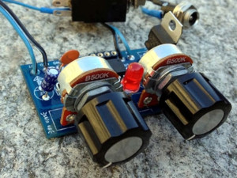

As a self-taught musician I play with various gear. In 2008 I get infected by the DIY fever and I decided to build my own instruments.
In this page you can find a list of the hardware projects I've developed so far. I make workshops, teaching people how to build and use them.
ATtiny multiboard is a printed circuit board hosting an ATtiny85 micro controller unit, two potentiometers, the components to allow audio generation and a led.
The Attiny85 can be programmed by using the Arduino integrated development enviroment.

Hidden sound explorer
is a circuit that allows to amplify small voltages coming from piezo-electric
transducers or from coils.

bpd
is a three oscillators voice for eurorack systems.

bebe
is a two oscillators sound generator with a 5 steps gate sequencer/lfo.